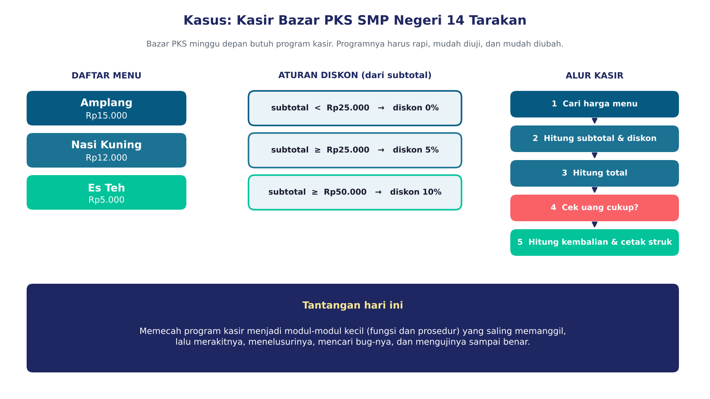
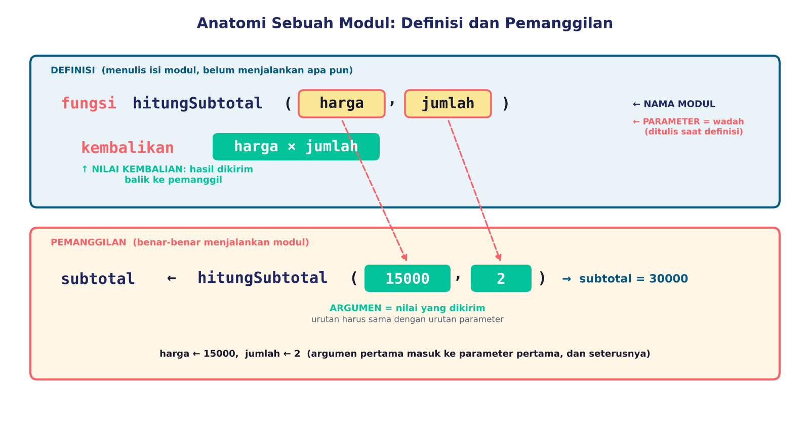
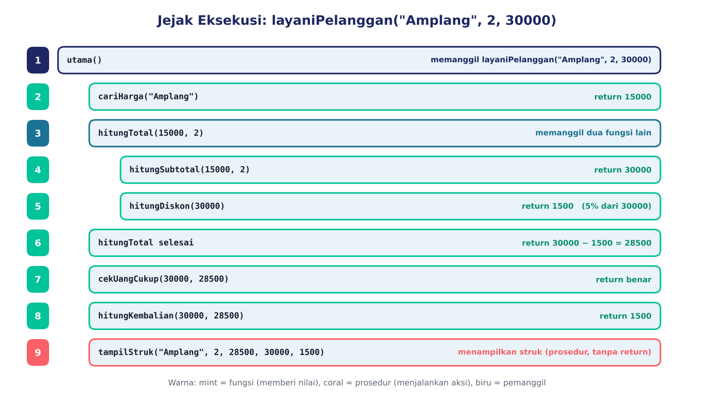
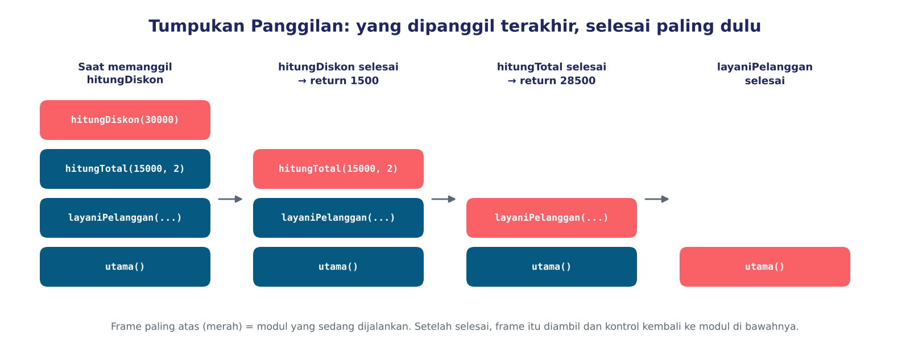
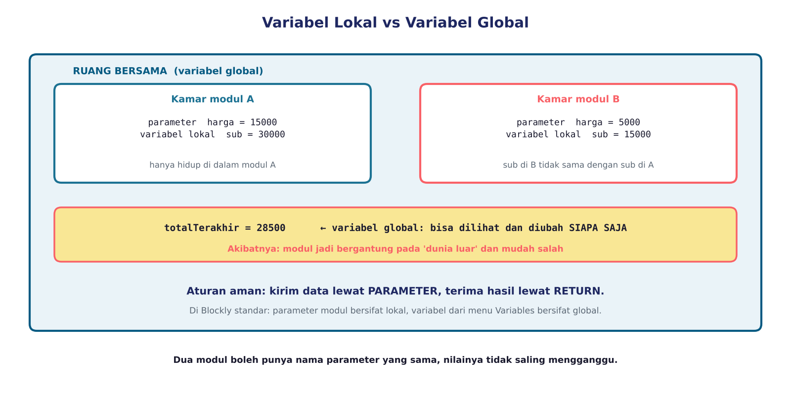
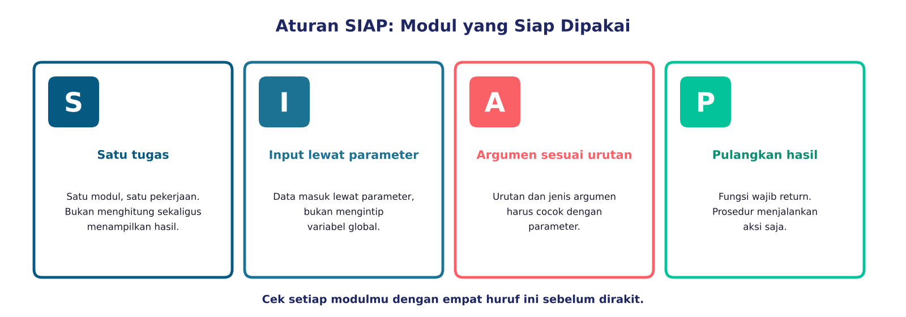
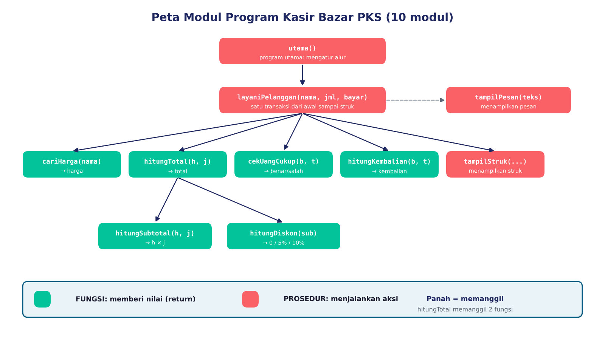
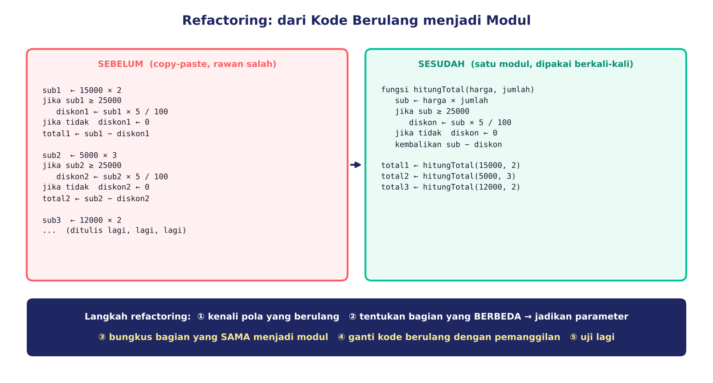

Kasir untuk Bazar PKS
Minggu depan ada Bazar PKS di sekolah: Amplang, Nasi Kuning, dan Es Teh. Panitia butuh kasir digital. Kemarin kamu belajar memecah program menjadi modul. Hari ini kamu merakit, menelusuri, memperbaiki, dan menguji modul-modul itu.

Anatomi sebuah modul
Parameter = wadah input yang ditulis pada definisi. Argumen = nilai nyata yang dikirim saat pemanggilan. Return = nilai yang dikirim balik. Argumen masuk ke parameter menurut urutan.

Mesin Modul
Pilih sebuah modul, isi argumennya, lalu panggil. Perhatikan: urutan argumen menentukan hasil.
Jejak eksekusi dan tumpukan panggilan
Saat sebuah modul memanggil modul lain, program pergi ke sana, mengerjakannya, lalu kembali ke pemanggil. Modul yang dipanggil paling akhir selesai paling dulu.

Penelusur Jejak
Pilih kasus uji, lalu tekan Langkah berikutnya. Lihat tumpukan di sebelah kanan.

Variabel lokal dan global
Parameter dan variabel di dalam modul adalah kamar pribadi. Kirim data lewat parameter, terima lewat return.

Prediksi dulu!
prosedur utama
x ← 5
ubah()
tampil x
prosedur ubah
x ← 99 (x lokal milik ubah)Apa yang ditampilkan?
Aturan SIAP dan peta modul


Refactoring: dari kode berulang menjadi modul

Fungsi atau prosedur?
Klik jawaban yang tepat untuk setiap modul.
Detektif Bug
Ada empat kartu bug. Baca kode dan gejalanya, lalu klik baris yang salah.